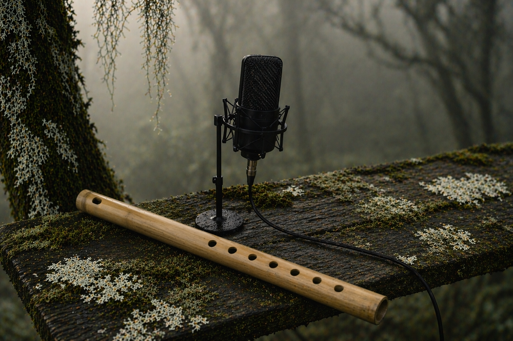

Grabaciones
Inicio > Estudio paramuno > Grabaciones
Las grabaciones en Estudio paramuno no se conciben como productos cerrados, sino como parte de un proceso de trabajo centrado en el sonido. Funcionan como registros de exploración: ensayos con instrumentos, materiales, afinaciones, técnicas, repertorios y lenguajes musicales que se ponen a prueba en condiciones deliberadamente simples. En este contexto, grabar no implica fijar una obra, sino documentar un momento dentro de una práctica en desarrollo.
Actualmente se están preparando distintas líneas de trabajo que incluyen piezas solistas de composición propia, la creación de bandas sonoras y la exploración de tradiciones musicales diversas. Entre ellas se encuentran series en desarrollo como Uno, En crudo y Al desnudo, concebidas como espacios de experimentación directa con instrumentos, materiales y formas de sonido.
Existen también registros anteriores en los que participé directamente (ver abajo), realizados en contextos y etapas distintas de mi trayectoria: Quebrando el silencio, con el grupo Wayra (Gran Canaria, España, 1996), y Vientos de tierra de vientos (Córdoba, Argentina, 2007), una autoproducción como multiinstrumentista. Estos materiales no responden a las líneas de trabajo actuales, pero forman parte del recorrido que desemboca en ellas.
Las nuevas grabaciones irán incorporándose a este espacio a medida que se completen.
Quebrando el silencio
Quebrando el silencio (Gran Canaria, España, 1996) fue un trabajo colectivo realizado junto al grupo Wayra, centrado en repertorios de música andina y de la Nueva Canción latinoamericana. Mi participación se desarrolló principalmente en los instrumentos de viento, contribuyendo a la construcción de una sonoridad homogénea a lo largo del conjunto de las piezas.
Selección
03. La yalena [Cuesta de Azulpampa]
(Sikureada) - D.R.
Escuchar
06. Takina / Hasta otro día
(Cueca - Huayno) - D.R.
Escuchar
12. Flor de Mamiña
(Saya andina) - Omar Sepúlveda
Escuchar
Vientos de tierra de vientos
Vientos de tierra de vientos (Córdoba, Argentina, 2007) es una grabación solista concebida como un ejercicio de experimentación con instrumentos y repertorios del ámbito andino. Realizada mediante la superposición de múltiples pistas interpretadas por un único músico, combina arreglos de piezas tradicionales con composiciones propias. El resultado recoge tanto búsquedas tímbricas y estructurales como los límites técnicos y metodológicos de su proceso de producción.
Selección
01. Tierra de vientos
(Sikuri) - E. Civallero
Escuchar
02. Lucero del alba
(Yarawi - Wayñu) - E. Civallero
Escuchar
03. Akulliku
(Estudio para charango - Jach'a sikuri) - J. J. Laura - Arr. E. Civallero
Escuchar
04. Cae la noche, sopla el viento
(Danzante) - A. de Robertis - Arr. E. Civallero
Escuchar
05. La cigarra
(Cueca) - D. Montes - Arr. E. Civallero
Escuchar
07. Alma aymara
(Tarkeadas y lichiwayu) - "Kusi huaynas" (trad.), "Lichiwayu" (trad.), y "Flor de rosa" (trad.) - Arr. E. Civallero
Escuchar
09. Lluvia en la puna
(Aire de baguala) - E. Civallero
Escuchar
10. Morenadas
(Selección de morenadas) – "Palapa" (J. L. Gamboa) y "Morenada de los Sapos" (G. Vargas) - Arr. E. Civallero
Escuchar
12. Jamás
(Fusión) - Alejandro Zárate - Arr. E. Civallero
Escuchar